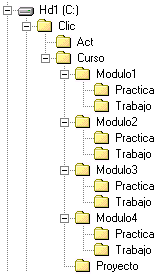

Consideraciones previasPara realizar este curso se requieren unos conocimientos y destrezas b�sicas en el dominio del entorno Windows y de Internet. En concreto conviene estar familiarizado con operaciones como crear carpetas, copiar archivos, cambiar los nombres de archivos y carpetas, instalar programas, comprimir y descomprimir con WinZip, navegar por la web, enviar y recibir mensajes de correo electr�nico... Antes de iniciar el curso es conveniente haber adquirido conocimientos b�sicos en la creaci�n y tratamiento de im�genes y sonido digital. Objetivos del cursoLos principales objetivos del curso son: - Conocer el entorno Clic 3.0 y sus posibilidades did�cticas. - Realizar actividades en las diversas modalidades que ofrece el programa. - Integrar recursos multimedia en materiales did�cticos. - Programar secuencias de actividades organizadas en paquetes. - Retocar y adaptar materiales existentes a necesidades did�cticas espec�ficas. - Familiarizarse con el funcionamiento del sistema de informes y seguimiento de progreso de los alumnos. Estructura del cursoEl tiempo necesario para realizar el curso completo se estima en unas 24 horas. El curso consta de cuatro m�dulos, de seis horas de duraci�n cada uno. Los m�dulos constan de: A. Un documento principal donde se explican los contenidos b�sicos. B. Un conjunto de pr�cticas comentadas paso a paso. Conviene realizarlas en el orden que se propone, ya que a menudo en una pr�ctica se aprovechan materiales creados en las anteriores. C. Una propuesta de ejercicios a realizar. Si sigue el curso a trav�s de alguna instituci�n oficial deber� enviar por correo electr�nico estos ejercicios resueltos a su tutor/a para obtener el correspondiente certificado. Requisitos de softwareAunque el programa Clic funciona tambi�n en entornos Windows 3.1, los materiales de este curso se han dise�ado para un ordenador multimedia equipado con Windows 95, 98, o NT. Conviene comprobar que los controladores de la tarjeta de sonido est�n correctamente instalados y configurados, as� como las conexiones y funcionamiento de los altavoces y el micr�fono. Para realizar las pr�cticas y los ejercicios del curso debe disponer del software siguiente:
Organizaci�n de los archivosAntes de empezar el curso hay que descargar el archivo CURSO.EXE (1821 Kb). Al ejecutar este archivo se crearan las carpetas con los materiales necesarios para realizar las pr�cticas y los ejercicios del curso. Los materiales se instalan por defecto en la carpeta C:\CLIC\CURSO y presentan la siguiente estructura:  Las carpetas "Practica" de cada m�dulo contienen los materiales necesarios para realizar las pr�cticas, y las carpetas "Trabajo" est�n preparadas para que usted realice en ellas los ejercicios. Se crea tambi�n una carpeta "Proyecto" que le servir� de almac�n para el proyecto final. |